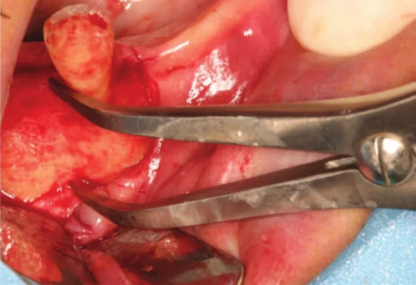
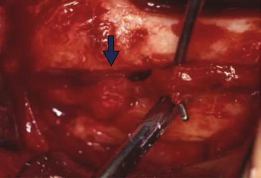

نسخه استخراجشده؛ ترجمه یا تأیید علمی انجام نشده است. وضعیت: captured
وقتی به «آسیب عصبی در ایمپلنت» فکر میکنی، احتمالاً مته به ذهنت میآید. اما چند مسیر دیگر هم هست که هیچکدام مته نیستند.
۱. رتراکشن. آسیبهای کششی (نوروپراکسی) میتوانند از رتراکشن بیشازحد بیایند، پس باید به نزدیکی ساختارهای عصبی حیاتی درون بافت کنارزدهشده توجه کرد.
دو قاعدهی مشخص:
• رتراکتورها همیشه باید روی استخوان قرار گیرند و نگه داشته شوند تا از لغزش یا فشار بیشازحد بر بافت نرم — که به آسیب نوروپراکسی میانجامد — جلوگیری شود.
• باید از رتراکتورهای با پایهی پهن (نه تیز) برای کنار زدن بافتی که مستقیماً روی فورامن منتال نیست استفاده کرد، چون کشش بیشازحد تنهی عصب میتواند آسیب برگشتناپذیر بسازد.
به این ترکیب دقت کن: «کشش بیشازحد» + «برگشتناپذیر». رتراکشن، مهارتی است که معمولاً به دستیار سپرده میشود و بهندرت آموزش داده میشود.
۲. بخیه. دو مسیر آسیب جداگانه:
• گیر افتادن بافت عصبی در خط بخیه — جایگذاری بخیه باید با دقت ارزیابی شود تا شاخههای عصب منتال درون نخ گیر نیفتند و نوروپراکسی (فشاری) ایجاد نشود.
• عبور خود سوزن — فیبرهای عصبی میتوانند از عبور سوزن بسیار تیز بخیه از میان بافت آسیب ببینند.
یعنی حتی بستن زخم — آخرین و بهظاهر بیخطرترین مرحله — میتواند منبع آسیب دائمی باشد.
۳. برش. در تحلیل شدید ریج ممکن است عصب منتال روی کرست دهیسنس داشته باشد و برش کرستال آن را قطع کند؛ در این حالت برش را لینگوالتر بزن. شناخت موقعیت سه شاخهی عصب منتال ضروری است، چون برشهای نابهجا روی این شاخهها میتوانند آسیب از نوع نوروتمزیس (قطع) بسازند — یعنی شدیدترین درجه، با کمترین احتمال بهبود.
راههای اجتناب: لندمارکهای آناتومیک، مدلهای سهبعدی، اندازهگیری دقیق از اسکن CBCT، یا لمس اعصاب.

بیحسی موضعی — و راهبردی که باید کنار بگذاری.
بیحسی موضعی کافی برای جراحی موفق ایمپلنت و پروتکل کاهش استرس حیاتی است. گاهی تکنیک جایگزینی پیشنهاد میشود: کاشت در خلف مندیبل بدون بلوک عصب مندیبولار، فقط با انفیلتراسیون اطراف محل، تا بیمار نزدیک شدن مته به عصب را خبر دهد.
این روش را کنار بگذار. پاسخ بیمار به آستانهی دردش بستگی دارد و بسیار ذهنی است، مثبت و منفی کاذب زیاد دارد، و آناتومی عصب و شاخههایش هم ناسازگار است. در یک گزارش، با آنکه روش در ۹۱ درصد موارد «ایمن» بود، حدود یک بیمار از هر ده دچار نقص حسی شد. امروز که CBCT موقعیت عصب را دقیق نشان میدهد، جایی برای تکیه بر هشدار بیمار نیست.
و یادآوری آماری: آسیب دائمی در حدود ۱ مورد از هر ۲۵٬۰۰۰ بلوک عصب آلوئولار تحتانی گزارش شده — یعنی خودِ بلوک هم یک منبع مستقل آسیب است، جدا از جراحی.
حرارت. دماهای بیشازحد نکروز، فیبروز، دژنراسیون و افزایش فعالیت استئوکلاستی میسازند. برای به حداقل رساندن این عارضه، تراکم استخوان باید پیش از عمل با CBCT، ارزیابی لمسی و موقعیت محل سنجیده شود.
و هشدار مشخص دربارهی گاید: هنگام آمادهسازی استئوتومی باید مقدار فراوان ایریگیشن استفاده شود تا حرارت کم شود — بهویژه با استفاده از SurgiGuide. همان الگوی آشنا: ابزار دقت، مسیر خنککننده را میبندد.
و حالا مهمترین نکتهی این درس — یک نشانه که به آن اعتماد نکن:
صریح بدان: میزان خونریزی درون استئوتومی نشانگر نزدیکی یا نقض کانال نوروواسکولار نیست.
این جمله را دو بار بخوان. بسیاری از درمانگران ناخودآگاه از خونریزی بهعنوان علامت هشدار استفاده میکنند — ولی این علامت معتبر نیست. نه نبودش یعنی امنی، نه بودنش یعنی خطر: فضاهای مغز استخوان بزرگ در خلف مندیبل (استخوان D4) خودشان خونریزی زیاد میدهند.
پس به چه چیزی تکیه کنی؟ به اندازهگیری. و یک عادت ساده هست که بهراحتی از قلم میافتد: بهطور ایدهآل، همهی فرزها را پیش از انجام استئوتومی اندازه بگیر.
خطوط عمق روی فرز معمولاً نوک Vشکل برنده (بُعد Y) را حساب نمیکنند و این نوک ممکن است تا ۱٫۵ میلیمتر عمیقتر برود؛ یعنی بخش بزرگی از منطقهی امن ۲ میلیمتری پیش از آنکه متوجه شوی مصرف شده است.
و یک هشدار دربارهی جابهجایی عصب: در تکنیک نقلمکان عصب — که در آن IAN به سمت فاسیال جابهجا و ایمپلنت در موقعیت قبلی دستهی عصبی کاشته میشود — خطر ذاتیاش نقص حسی شاخهی منتال (بیحسی، پارستزی یا دیساستزی) است؛ در آتروفی شدید گزینهای معتبر است، ولی فقط برای جراح با آموزش و تجربهی پیشرفته.
